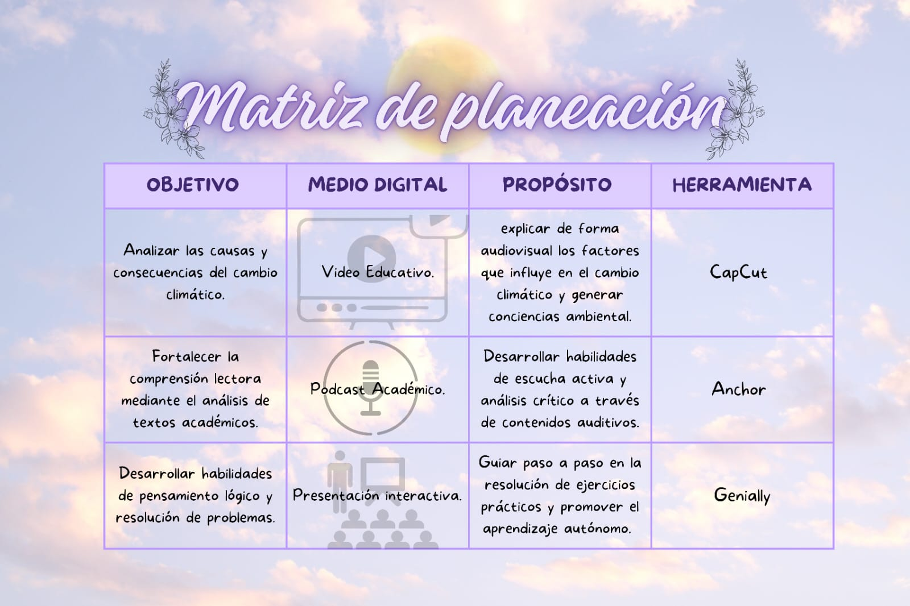

Fase 1: Fundamentos del Diseño Digital
Conceptos Clave
El diseño de contenidos digitales va más allá de lo visual. Se trata de organizar la información de manera que sea accesible, comprensible y útil para el usuario final.
Pilares del Diseño:
- Usabilidad: Facilidad con la que los usuarios pueden emplear una herramienta para lograr un objetivo concreto.
- Accesibilidad: Asegurar que el contenido sea consumible por personas con diversas capacidades.
- Arquitectura de Información: Estructuración lógica de los datos para facilitar la navegación.
"Un buen diseño digital anticipa las necesidades del usuario antes de que este tenga que preguntar."
Principios de Mayer
Richard Mayer propone que las personas aprenden mejor a partir de palabras e imágenes que de solo palabras. Sus principios ayudan a reducir la carga cognitiva.
Principios Esenciales:
- Coherencia: Excluir material extraño que no sea relevante.
- Señalización: Destacar la organización esencial del material.
- Redundancia: Gráficos + narración > gráficos + narración + texto en pantalla.
- Contigüidad Espacial: Colocar las palabras cerca de los gráficos correspondientes.
- Contigüidad Temporal: Presentar palabras e imágenes correspondientes simultáneamente.
Tendencias Globales
El diseño interactivo evoluciona constantemente. Las tendencias actuales se centran en la experiencia emocional y la inmersión.
Tendencias Actuales
- Scrolltelling: Narrativas que se desarrollan al hacer scroll.
- Micro-interacciones: Animaciones que responden a la acción del usuario.
- Tipografía Audaz: Fuentes gigantes como elemento gráfico principal.
Experiencia de Usuario
- Modo Oscuro: Diseños optimizados para descansar la vista.
- Accesibilidad: Inclusión de usuarios con diversas necesidades.
- Mobile First: Diseño pensado primero para dispositivos móviles.
Rol del Programador y Usuario
👨💻 El Programador / Diseñador
Su rol es técnico y creativo. Debe traducir necesidades en código funcional, asegurando que la interfaz sea intuitiva y el backend robusto. Es el arquitecto de la experiencia.
👤 El Usuario
No es un espectador pasivo. El usuario valida el diseño. Su comportamiento, clicks y tiempo de permanencia dictan si el diseño funciona. El enfoque UX pone al usuario en el centro.
Licenciamiento de Contenidos
Internet facilita compartir, pero es vital respetar la autoría. Conocer las licencias evita problemas legales y fomenta una comunidad digital sana.
🔒 Copyright
No se puede usar sin permiso explícito del autor. Todos los derechos reservados.
🎨 Creative Commons
Permite el uso bajo ciertas condiciones: atribución, no comercial, sin obras derivadas.
🌐 Dominio Público
Obras cuyos derechos de autor han expirado o fueron cedidos libremente.
💻 GPL / Open Source
Licencias de software que permiten modificar y distribuir el código fuente.
Importancia en la Educación
El diseño de contenidos es el motor de la educación moderna. Permite romper las barreras del aula tradicional.
Beneficios Clave:
- Retención: El cerebro procesa imágenes 60.000 veces más rápido que el texto.
- Accesibilidad Global: Cualquier persona con internet puede acceder a conocimiento de calidad.
- Interactividad: Gamificación y quizzes que hacen del aprendizaje un proceso activo.
- Personalización: El contenido digital puede adaptarse al ritmo de cada estudiante.
Herramientas Tecnológicas
Espacio práctico para la creación de contenido digital. Aquí se integran recursos multimedia para el aprendizaje.
📹 Vídeo Introductorio
Desarrollo de Contenidos Digitales: Conceptos básicos y flujo de trabajo
📋 Actividades Iniciales
- Diseño de Matriz de Planeación
- Video Educativo Corto
- Infografía Interactiva sobre Sistemas

🤖 Inteligencia Artificial Generativa
Presentación visual sobre el impacto de la IA en la Sostenibilidad.